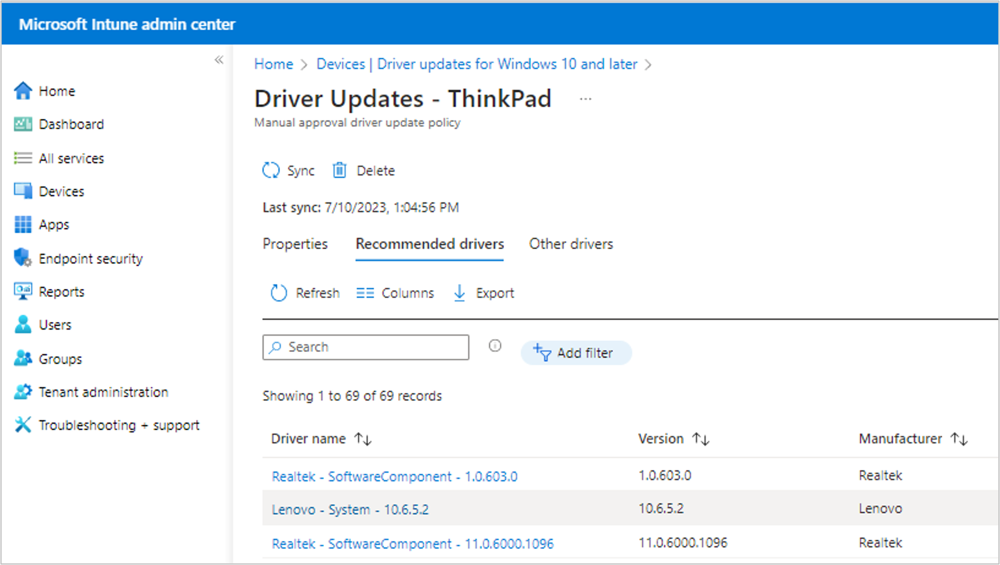

Windows Update for Business
Lenovo drivers and BIOS through Intune driver update policies.
Inventory
- What it is
- Per-update approval of drivers and firmware through Intune driver update policies, offered by Microsoft since 2021.
- Lenovo content
- Lenovo has submitted all driver and BIOS updates to Windows Update since 2018.
- Not available
- Some component firmware, and all dock firmware.
- Time to reach devices
- Gradual rollout of up to 30 to 45 days.
- Guide
- Microsoft Learn: manage driver updates
How approval works
An Intune driver update policy shows the drivers and firmware applicable to the devices it targets. Admins review the list and approve the updates they want deployed, or let recommended drivers flow automatically.

The rollout timeline
An update does not reach every device the day Lenovo submits it. Microsoft verifies and publishes it, then rolls it out gradually:
- StartLenovo publishes the update to our support site.
- ≤ 14 daysLenovo submits ship label in Microsoft Partner Center
- ≤ 14 daysMicrosoft verifies the submission
- 30 daysGradual rollout, then offered to all devices
Trade-offs
- Some component firmware and all dock firmware are not available through Windows Update.
- The limited per-update detail can make approval decisions difficult.
Get-LnvWUFriendlyNamein Lenovo.Client.Scripting lists what Windows Update installed on a device with friendly names, versions and install dates. Additionally, there is no way for Lenovo to trace the actual update applied by Windows Update back to our submission. - Environments that need immediate deployment, such as for a security vulnerability, are better served by Commercial Vantage or Lenovo.Client.Update.